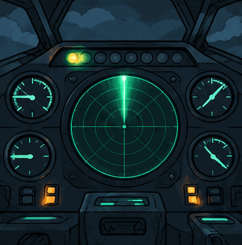
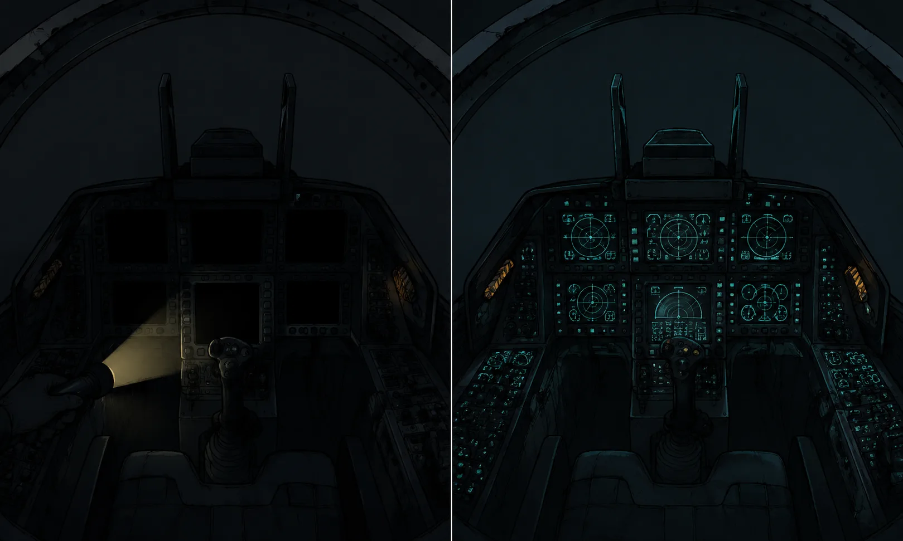
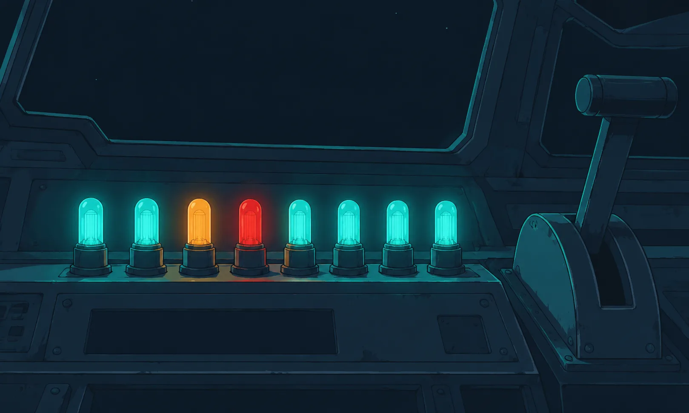
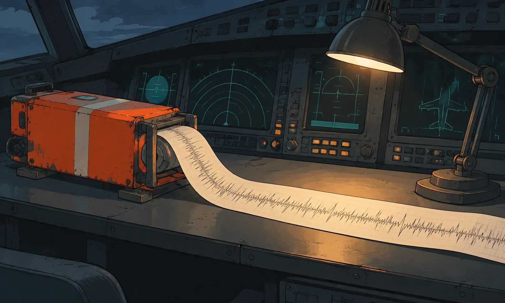
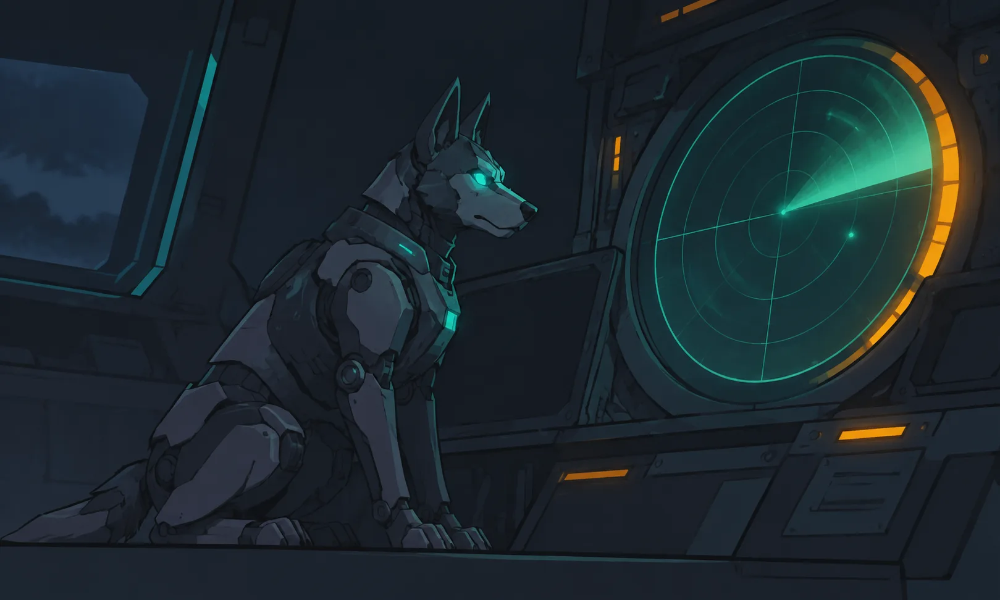

01 盲飞 —— 聊天窗口不是驾驶舱
02 事件流 —— 仪表的数据从哪来
03 五块仪表 —— 状态机怎么排成面板
04 手不离杆 —— 审批闸门与 120 秒支票
05 黑匣子 —— 飞行记录仪的三条纪律
06 警戒线 —— 看门狗、降级与费用闸门
附 —— 起飞前检查单：如果只带走十二句
仪表的第一职责不是好看，是让你在关键三秒里知道该不该拉杆。Agent 没有驾驶舱的干活方式叫盲飞——而大多数人对 Agent 的全部观测，就是聊天窗口里那句「好的，我来处理」。
本篇标本是一台本机自研的 Agent 工作台：前端 7,811 行 React、Django 后端带 179 个测试，底下接 hermes 网关。它的聊天页是一个 966 行的 ChatView，但真正让操作者睡得着的，是聊天流之外的另外三块：193 行的工具审批面板、侧栏的「运行状态」rail、以及一份 359 行的运行历史详情页。聊天流把过程转述成叙事——「我找到了三个文件，正在写入」；驾驶舱把过程摆成事实——一个 status 徽标、一个带倒计时的审批卡、一条逐条追加的事件日志。叙事可以说谎（模型会把「失败」说成「稍微遇到了一点阻力」），事实必须打点。
系列对照：VOL.12《住进机房的 Agent》让 Agent 盯服务器，这一篇反过来——人盯 Agent。方向掉了个头，工程上的分水岭却是一样的：事实由确定性代码决定，叙事只负责说话。
经典追问：为什么不把状态直接混进聊天流里说，非要单独做面板？三个理由。①读者不同——聊天流是给用户读的散文，会被模型的措辞润色；仪表是给操作者和代码读的数据，一个布尔一个数字，没有修辞空间。②生命周期不同——聊天气泡是「说过就沉下去」的，第二条消息很快把第一条顶出视野；状态必须可轮询、可刷新：审批面板每 3 秒拉一次最新状态，永远显示当前事实，而不是三分钟前的事实。③消费方式不同——仪表的下游是代码：审批面板轮询的是 JSON（8 个字段，一个 status 枚举），不是一段需要再解析一遍的中文。所以分工很清楚：聊天流可以「讲」，驾驶舱必须「摆」。

五块仪表共用同一根血管：一条由后端打点、单向流向前端的事件流。仪表上每一格读数、每一盏灯，都是这条流上某个事件的投影。
标本的线协议一共九种事件，前端分发器（api/projects.js L115–124）逐个 if 认领：status（链路元信息：网关、会话、模式、阶段）、thought 与 thought_delta（思考整段与增量）、tool_call / tool_result（工具一对）、tool_approval（审批请求）、delta（正文增量）、done 与 error（收尾两态）。其中审批事件的 payload 长这样（原样结构）：
{ "id": "9f14c0…",
"conversation_id": "2043", "run_id": "881",
"tool_name": "write_workspace_file",
"arguments": { "path": "notes/weekly.md" },
"status": "pending",
"expires_at": "2026-09-19T14:07:31.482Z" }
八个字段，最重要的一个是最后那个：expires_at。它把「审批」从一个礼貌用语变成了一个有截止时间的状态——这张支票 120 秒后自动作废，第四章专门算这笔账。
事件怎么到前端？两条通道。第一条是推送：流式响应里捎带，事件一发生就到。第二条是轮询：审批面板 refetchInterval: 3000（3 秒）、文件写入记录 refetchInterval: 5000（5 秒）、本地时钟每秒走一格驱动倒计时。推送图快，轮询图稳——推送断线就丢，轮询每次都从数据库拿当前事实。而且后端在每次轮询查询里顺手做了一件重要的事：reconcile() 把已经失效的行批量修正——运行结束的活跃审批改成 cancelled、被取消的改成 cancelled、过了 expires_at 的改成 expired。轮询不只是拿数据，还是一次修复机会；SSE 断了的三秒里，事实靠它兜底。
经典追问：为什么有了 SSE 推送，还要每 3 秒轮询一次？因为推送和事实源是两种东西。推送的语义是「事件发生时尽量告诉你」，它的失败模式全是静默的：断线、代理超时、标签页休眠，丢了你都不知道丢。而审批这种「人要据此做决定」的数据，宁可见了旧数据也不能见假数据——轮询每次都从库里重取，还顺路跑一遍 reconcile 修状态。VOL.08 拆过三条信号线怎么把数据运过来，这一篇补的是下一句：运到之后，事实以库里的状态为准，推送只是让仪表转得更跟手的减速轮。
{ "event": null }
仪表的本质是状态的投影。状态枚举少一个，就有一种事故不可见；标签含糊一个，操作者就多一次误读。这一章把标本的状态机摊开数一数。
标本里最核心的一台状态机长这样（apps/tools/models.py L63 原样）：一条审批记录从生到死共八态——pending / approved / running / succeeded / failed / denied / expired / cancelled。注释只有一句：「One immutable approval request; only the originating worker may claim it.」（一条不可变的审批请求；只有发起它的那个工作线程能认领。）模型上还有一台五态的运行机 pending / running / done / failed / cancelled（max_steps 默认 8，步数计数器 step_count 随行）。
| 状态 | 谁触发 | 意味着什么 | 面板标签（原样） |
|---|---|---|---|
| pending | 内核创建审批单 | 等 human，倒计时 120s | 等待审批 |
| approved | 人点了「允许」（CAS 落库） | 批了，但机器还没拿走 | 已批准 · 等待执行 |
| running | 工作线程 CAS 认领成功 | 正在真执行 | 执行中 |
| succeeded / failed | handler 返回 ok 与否 | 终态，带 result 落库 | 执行成功 / 执行失败 |
| denied | 人点了「拒绝」 | 终态，error=「用户拒绝了工具执行。」 | 已拒绝 |
| expired | reconcile 扫到过期 | 终态，error=「审批已过期。」 | 已过期 |
| cancelled | reconcile 扫到运行结束/取消 | 终态，error=「运行已取消。」 | 已取消 |
对照旁证：本机另一台生成工作台的执行轨迹枚举了 11 个阶段（queued / preparing / requesting / waiting / retrying / downloading / saving / completed / failed / cancelled / recovered）——枚举粒度不同，原则相同：面板上出现的每一个词，都必须是枚举里的一项，且带一句人话标签。标本前端把八态翻成中文（STATUS_LABELS），并给 pending 卡上印了一句很关键的提示：「批准不代表执行成功」。
经典追问：五个状态不够用吗？为什么非要八个？逐个数「多出来的」：denied 和 expired 是审批的两种死法——「被拒绝」和「没人理」是两回事，合并成 failed，三个月后的你就分不清是工具失败还是人没理它。approved 单列才是精髓：「人批了」和「机器拿了」之间有一段真空，真空期会撞上三种事故——运行被取消、支票过期、同一张单被重复提交。把真空命名成状态，事故才有处可查：查到 approved 卡住 30 秒，是线程死了；查到直接从 pending 跳 running，那数据是假的。每个多出来的状态，都是一类真实事故的姓名。

# 点「创建审批单」开始 —— 非法转移会被拒绝并给出原因
驾驶舱和仪表盘的区别在于：仪表盘只读，驾驶舱带操纵杆。审批就是那根杆——但「批」这个动作背后的工程，比一个按钮多得多。
执行线程走到需要审批的工具时，做的事朴素到只有一行（tool_approval.py）：创建一条 pending 审批单，expires_at = now + 120s，向事件流广播一条 tool_approval，然后进入 while 循环——每 POLL_INTERVAL = 0.1s 醒一次，做三件事：看运行是否被取消、跑一遍 reconcile、检查是否过了 120 秒期限。人批了之后也不是直接跑，而是一次CAS 认领（源码注释原样）：
# Compare-and-swap: no transaction/lock is held while waiting or executing. claimed = rows.filter(status="approved", decision="allow", expires_at__gt=timezone.now(), # 支票还在有效期内 run__status="running", # 运行还活着 conversation__cancel_requested=False, # 没人喊停 ).update(status="running") if not claimed: continue # 世界变了，这轮不认领，下轮再说 execution.refresh_from_db() # execute only the persisted, approved arguments
四条守卫写在同一个 filter 里，原子地完成「检查并拿走」：支票有效期、运行存活、没有取消请求、状态恰好是 approved——任何一条不满足，认领失败，循环继续。旁证是本机另一台的更原始写法：剪辑工作台的蓝图执行器直接停在 awaiting_gate，一行 self.event.wait() 把线程挂起，等人审端点改库后 event.clear() + 重取库内最新状态再继续——同一种停等，只是把轮询换成了事件唤醒。它的注释还多交代了一层驾驶舱责任：「人审通过后新开一段，超支只追这一段的账」——费用闸门以门禁为段起点重新计时。
人这一侧同样被工程化。点「允许」的请求带同样的 CAS 守卫（approval_views.py L78）：status="pending", decision="", expires_at__gt=now, run__status="running"——只有还在等待、还没表过态、支票没过期、运行还活着的单子才会被改。改完之后的判定只有一行却值得抄在墙上（注释原样）：
# A repeated identical decision is a read, never another execution. # Terminal expiry/cancellation cannot be resurrected even by an earlier allow. same = execution.decision == decision and execution.status not in ("expired", "cancelled") return Response(..., status=200 if changed or same else 409)
前端配合了三道保险：点过的单子进 locks 集合防双击、决定提交成功后 cancelQueries 取消在途轮询防止旧 pending 按钮回填、本地倒计时到期就把按钮禁用交给服务端定夺。还有一台配套的回滚机：文件写入记录三态 applied / rejected / rolled_back，卡片上用 difflib 生成 unified diff 供人核——「批准前看 diff，批准后可回滚」，回滚非 applied 状态会得到一句 409：「仅已应用的写入可回滚（当前：rolled_back）。」
经典追问：批准为什么要 120 秒过期？永不失效不行吗？因为你批准的从来不是一条命令，而是某个会话状态里的一段意图——「在这个运行里、对这份参数、现在执行」。支票兑现之前，世界会变：运行可能被取消，参数对应的上下文可能已经滚过一轮，你自己可能早就切走了。永不失效的批准就是把三个月前的决定永久绑在未来，而当时的那次点头早就失去了前提。过期时间不是不信任人，是给「批了但没执行」这类僵尸状态一个体面的葬礼——reconcile 扫到它，标 expired、写 error，下不为例。所以标本的前端在过期卡上只显示一个动作：刷新，让服务端状态说话。
# 创建一张单，先随便玩，再看两个经典翻车：重复提交、过期复活
事故总会发生。黑匣子的价值不在事故前，而在事故后——读者是三个月后的你自己，那时的你已经忘了现场，只剩记录。
本机渠道探测 Agent 的日志器只有 20 行，却是全仓库被引用最多的部件之一（app/engine.py L116 原样）：
def add(self, msg): self.items.append((time.perf_counter() - self.t0, msg)) def render(self): return "\n".join(f"[{t * 1000:8.0f}ms] {m}" for t, m in self.items) # 渲染出来长这样——相对时间戳让每一步的成本自己开口： [ 218ms] HTTP 200 [ 467ms] TTFB 249ms · stream event 1
相对时间戳是它全部的魔法：不做绝对时间（要对表），只记「距起跑多少毫秒」，八位右对齐——成本一眼可比。载荷另设 PAYLOAD_KEEP = 1600 截断，超长只留前段。这套格式后来成了它的前端徽标：每个渠道状态点都 data-act="show-log"，点开就能翻最近 80 条——可点击的徽标背后必须藏着时间线，这是「日志不是黑盒」这条硬需求的最小实现。

另一台生成工作台的 execution-trace.js（181 行）把记录仪的纪律写得更全。其一脱敏：redactTraceText 在落库前把 Bearer、sk- 开头的密钥、key=value 形态的凭据全部换成 [已隐藏]，URL 只留 origin + path——收集面还更细：traceSecrets() 把 apiKey、cookie、自定义头、连 URL 里带的密码都收进密钥清单，按长度倒序替换，防止「先替换短密钥把长密钥截断」的漏洞。其二合并：waiting / preparing / downloading 三类同阶段更新不追加新行，只刷新当前行——2 秒轮询一次的等待期，60 行数据压成 1 行。其三限长：TRACE_LIMIT = 40 滚动窗口，永远只留最近 40 条。
剪辑工作台的轨迹面板是第四个旁证：GET /api/job/{id} 返回 steps: [{t, msg}]——纯追加、绝不改写的历史，前端按相对时间 mm:ss 渲染。README 里它有个自带重量的名字：「任务轨迹面板（反黑盒红线）」。这三台机器没商量过，却达成了同一份共识：驾驶舱给当下，黑匣子给事后；黑匣子的写入者只管如实追加，永不为好看而改写历史。
经典追问：记录仪为什么要合并同阶段，而不是老老实实全量记录？因为记录仪的价值密度分布极不均匀：正常等待期的两百次「仍在 waiting」是零信息重复，异常时刻那一毫秒的三条连续事件才是全部分量。全量记录有两个真实代价：检索时，异常事件被 43,200 行噪声顶出视野（人翻日志、grep 分页都一样）；存储时，「 forever 保留一切」的美好愿望在磁盘面前从不成立。合并的正确姿势是把两个概念分开记账——状态进时间轴，更新次数进计数器：那一行 waiting 旁边标注「×214」，信息一点没丢，噪声少了一百多倍。
— 拖动滑块 —
前五章都是「看得见」，这一章是「拦得住」：一段只看第一帧的看门狗、一条不说狠话的降级链、一道按段记账的费用闸——三道警戒线，拦的全是同一种敌人：无声的失败。
中转站最常见的故障形态不是断连，是「连接建立后长时间一字节不发」——TCP 三次握手都完成了，read 超时却设在 240s/600s，等它自己报错太浪费。标本的解法是一个 30 行的包装器（services/stream_guard.py 文件头原样）：
"""流式首事件看门狗：上游迟迟不吐第一个事件就中止本次尝试，交给降级链。 首个事件一旦到达，后续分片间隔（模型思考）交回 read 超时管。""" item = events.get(timeout=timeout) # 泵线程把源事件转进队列 except queue.Empty: raise RuntimeError("上游 {timeout:g}s 未产出首个流式事件，已中止本次尝试" "（可用环境变量 AI_FIRST_TOKEN_TIMEOUT 调整）")
机制是一条泵线程 + 一个队列：源迭代器在后台线程里跑，每个事件转投队列；主线程带 90 秒预算去取第一个事件（默认值 AI_FIRST_TOKEN_TIMEOUT = 90，settings.py L228），取不到就抛错、关闭源、把这次尝试交给降级链换下一站。妙处在那个 finally：包装器被 close 时会顺手 close() 底下的源——认输也要把连接收干净，不留半开的裸流。工具调用那条线同理，MCP 客户端 CALL_TIMEOUT = 90。

看门狗开火之后，链路切到备用渠道——此刻用户屏幕上出现什么？标本的选择写在前端注释里（ChatView 原样）：「链路切换是运行时降级，不是致命错误：中性提示样式，不渲染成红色错误横幅」。横幅换成一条中性 notice，带「复制诊断」按钮——诊断文本里是网关、阶段、降级原因的结构化字段，贴给运维就能查。红色留给真正的终态失败；把降级染红，等于训练用户对红色免疫。旁边还有一层保险：Agent 侧的步数上限 max_steps = 8 配着 update_status_atomic（只允许 pending/running 内转移，防竞态）——失控的循环在第 8 步被物理切断。
警戒线的最后一段来自剪辑工作台（IN-1 费用闸门，真实常量）：执行器每过一节点比对「本段实际消耗 vs 该段预估」，超阈值就停——run_state 退回 draft，已通过节点保留，把「预估 vs 实际」落进 cost_gate 字段进 UI（反黑盒）。而它在门禁通过时的记账动作很讲究（源码原样）：cost_gate = {'status': 'ok', 'gate_id': gate_nid, 'segment_started_at': time.time()}——人审通过即新开一段，预算按段重置，超支只追这一段的账。如果把整次运行当一本账，一次误判就能锁死全局；分段之后，误判的代价被隔离在段内。
经典追问：看门狗为什么只看第一个事件，后面的间隔就不管了？因为一条流的时间线其实是两段制度。第一段（连接后到首事件前）：上游可能已经死了，但它不报错也不吐字——唯一可靠的判据就是「等了多少秒还没有第一个事件」，所以用看门狗硬性限 90 秒。第二段（首事件之后）：分片间隔是模型思考的正常节奏——长思考停 40 秒完全健康，如果也用 90 秒卡间隔，正常的深思会被误杀。所以标本的注释写得毫不含糊：「首个事件一旦到达，后续分片间隔交回 read 超时管」。一把尺子量两段制度，要么误杀思考，要么放过了挂死——切开管，是唯一两头都站得住的切法。
# 选一种形态按播放 —— 每行 [相对秒]，与 Timeline 同款格式
贴在手边的那一页。每句都是前面六章的浓缩，展开版见各章。
[ 218ms] 让每一步的成本自己开口，成本一眼可比。驾驶舱的全部心思可以压成一句话：让同一条事件流，在六种角色面前各被读一遍——聊天流把它读成叙事，面板把它读成状态，闸门把它读成一张要兑现的支票，黑匣子把它读成只追加的历史，看门狗把它读成第一帧有没有准时出现，费用闸把它读成一段一段的账。写完这篇试了试标本的六个小样，最有意思的是互动 04：把批准后的单子晾到过期再点允许，回给浏览器的是那句 409——「终态不可复活，连更早的 allow 也不行」，这条注释本来只是为了堵一个双击竞态，三个月后读起来，是一份关于「承诺有时效」的完整声明。